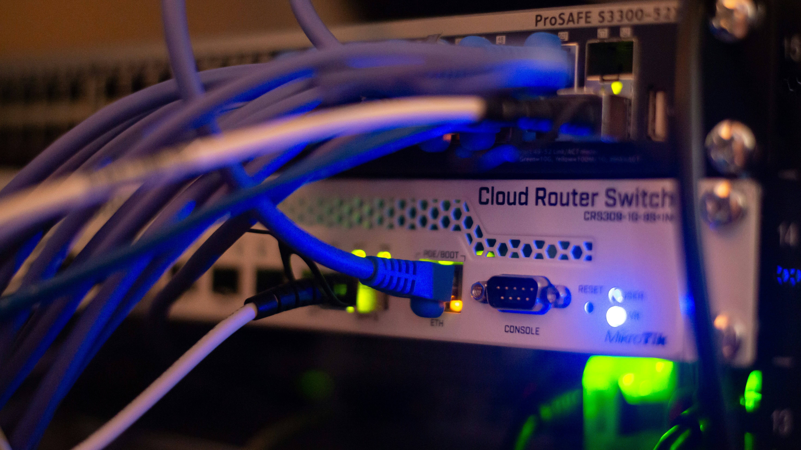
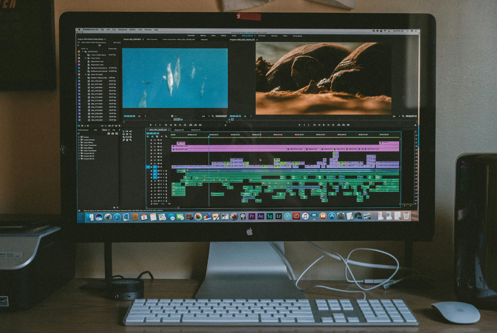

Projects
These are the projects I accomplished while learning both hardware and software in college. Each of them shows importance in IT industry including programming, web developing and networking.

Basic Network Setup
We set up a simple local area network (LAN) using a router, switch, and network cables. We configured IP addresses and tested connectivity between computers using ping and ipconfig commands.
Currency Converter
A simple desktop application that converts one currency to another using fixed exchange rates. This was developed during my 2nd year, 2nd semester as a Java programming project. It has a user-friendly interface where users can input an amount, select the source and target currencies, and view the converted result instantly.

Personal Portfolio Website
A responsive personal portfolio website built from scratch using HTML, CSS, and JavaScript. It includes multiple pages such as Home, About, Skills, Projects, Resume, and Contact. The site features a mobile-friendly navigation menu, a typing animation, animated skill bars, and a contact form with JavaScript validation. This project helped me understand how front-end technologies work together to create a complete and interactive website.

Animation and Video Editing
A creative multimedia project where I designed and edited short animations and videos. I used tools like Adobe After Effects, Premiere Pro, and Canva to create motion graphics, transitions, and visual effects. This project helped me develop my creativity, attention to detail, and timing skills. It also taught me how to tell a story through visuals and sound, which I find really fun and relaxing to work on.